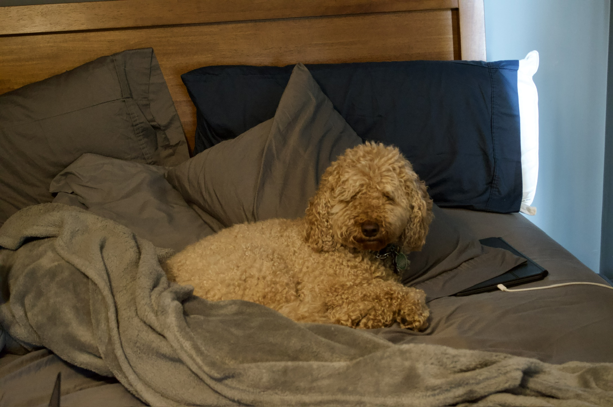

I went to high school at Saint John's High School in Shrewsbury, MA.
I got into the computer science field after taking my first intro to java class during my Sophmore year in high school.
The next year I took an AP Computer Science course and really enjoyed it.
I also am interested in photography and have a role as the Creative Director for The Quinnipiac Chronicle.
I have experience working with Java, GitHub, and HTML.
